Nokta Araçları
Nokta ve koordinat odaklı temel üretim komutları.
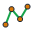
PLNNOXYZ2XYZT1ORTAERCAD icin harita ve kadastro komut paneli
Saha ölçülerinden CAD çizim üretimine kadar tekrar eden harita ve inşaat işlemlerini tek panelde düzenleyen profesyonel CAD eklentisi.
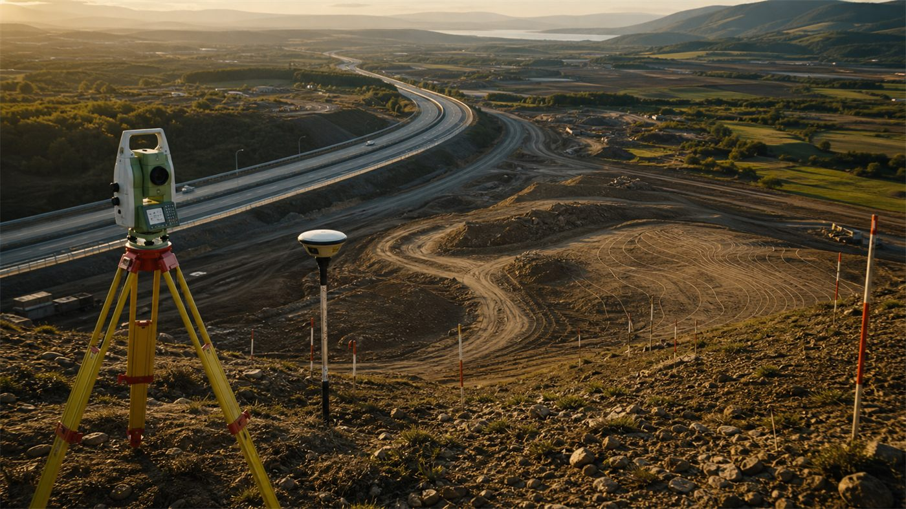
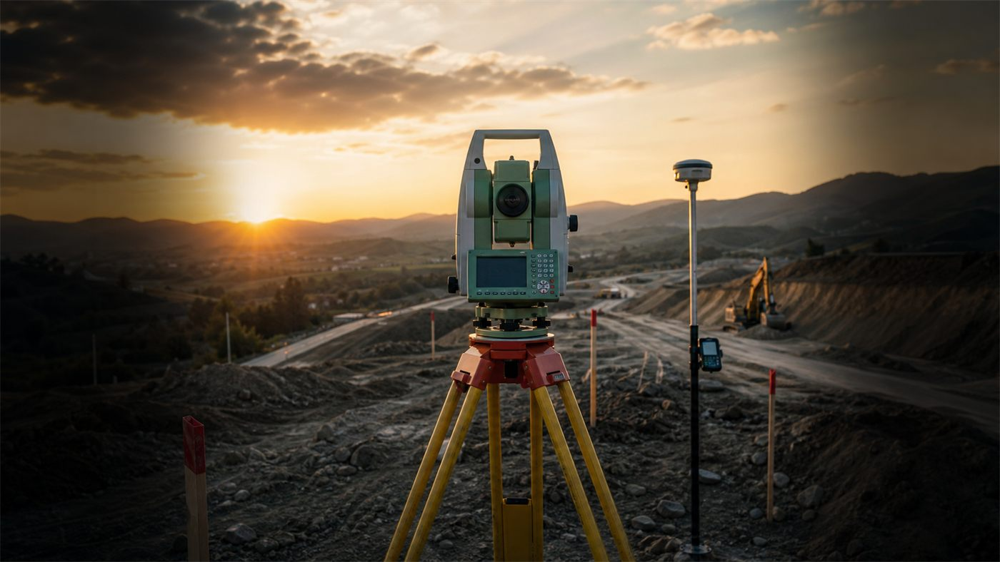
Program tanıtımı
SC23 Harita, CAD içinde üst şerit sekmesi olarak çalışır. Sık kullanılan LISP komutlarını düzenli, erişilebilir ve müşteri sürümüne uygun bir panelde toplar.
Nokta ve koordinat odaklı temel üretim komutları.

PLNNOXYZ2XYZT1ORTAERÇizim sorgulama, düzenleme ve hesap kontrol alanı.
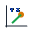
KY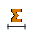
TOPSAC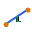
LYAZYTOP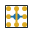
Ortalama Kot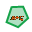
PLAC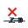
M2Yatay ve düşey güzergah üretim akışları.
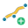
Yatay GüzergahDüşey GüzergahYol ParametreleriDüşey Profil Gör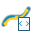
LandXML AktarCihaz LandXML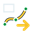
ExportImportYüzey oluşturma, düzenleme ve kontrol işlemleri.
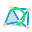
Üçgen DöndürÜçgen SilModel Düzelt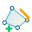
Model Düzenle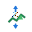
Kot Değiştir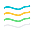
Eğri GeçirEğri DüzeltEğrilere Kot YazLandXML AktarExportImportEnkesit üretim, çizim ve kontrol araçları.
Profil oluşturma ve proje okuma akışı.
Kot alma, düzenleme, yazdırma ve kontrol süreci.
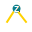
Hızlı Kot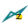
Yüzeyden Kot Al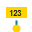
Yazıdan Kot AlKapalı PL Kotlandır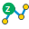
Vertex Kot AlEğim Ver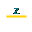
Sabit Kota Al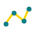
Kot Noktası Ekle/SilKot Yazdır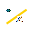
Kot Farkı UygulaKot Kontrol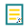
Kot Kontrol DetaylıENK ve prizma yöntemleriyle hacim hesaplama.
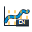
ENK YöntemiPrizma YöntemiSon ENK AlanlarıPrizma Katı ModelKoordinat sistemleri arası dönüşüm işlemleri.
Yükseklik ve ondülasyon hesap akışları.
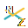
Z DeğeriSeçili verileri enlem boylam formatında dışa aktarır.
Çizim üzerinde yön bilgisi üretim aracı.
Google Earth aktarımı için koordinat ayarı.
Seçili çizim verilerini KML/KMZ olarak aktarır.
KML/KMZ dosyalarını CAD çizimine taşır.
Tabaka ve obje görünürlüklerini yönetir.
Model verilerini düzenli DWG çıktısına hazırlar.
Sürüm kontrolü ve güncel yapı takibi.
Harita ve Kadastro Teknikeri
Saha ölçüsünden ofis çizimine uzanan üretim sürecinde; nokta, kot, koordinat, yüzey ve çizim kontrollerini düzenli bir iş akışına dönüştüren teknik bir yaklaşım. SC23 Harita, harita ve inşaat projelerinde CAD üzerinde tekrar eden işlemleri tek panelde toplayarak saha-ofis bağlantısını daha hızlı, okunabilir ve profesyonel hale getirir.
Uzmanlık alanları
SC23 Harita; AutoCAD, Civil 3D ve Netcad çevresindeki harita işleri için ölçümden çizime uzanan pratik bir yardımcı eklenti yaklaşımı sunar. Enkesit, yüzey oluşturma, güzergah, hacim, kübaj, aplikasyon, alım, ölçüm ve Google Earth aktarımı gibi saha-ofis süreçlerini düzenli bir ribbon menüsü altında toplar.
Gelecek sürümler
Yakında.
YakındaYakında.
Yakında